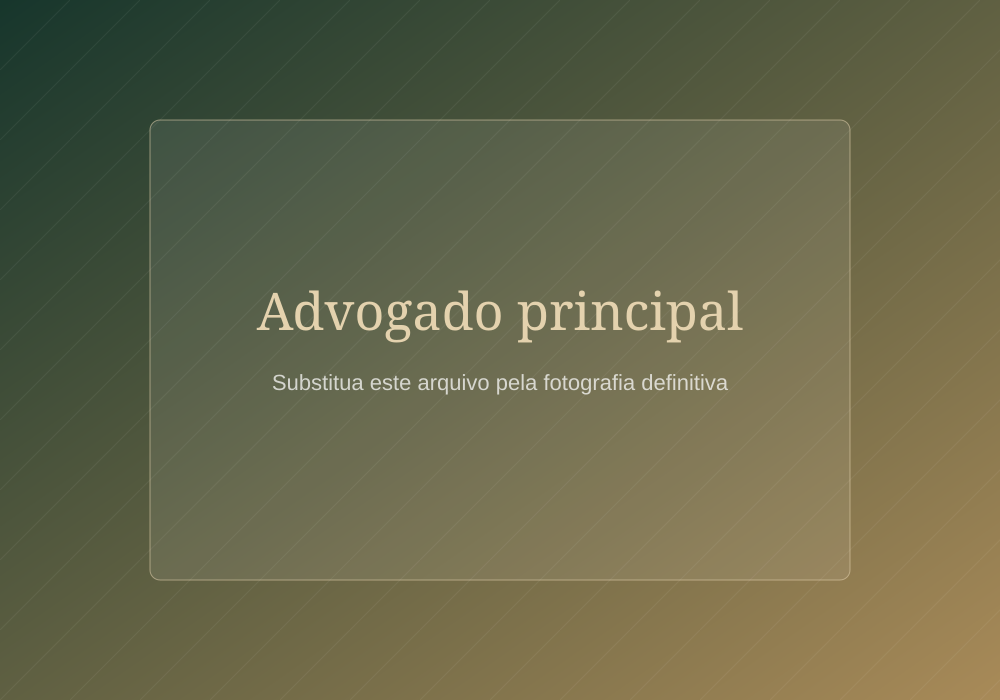
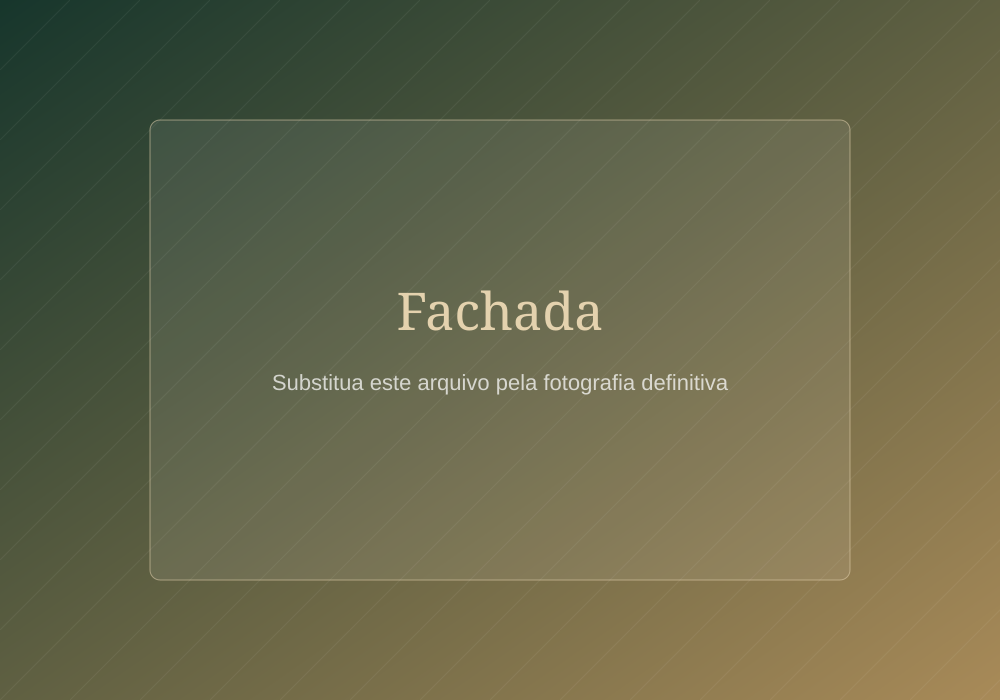
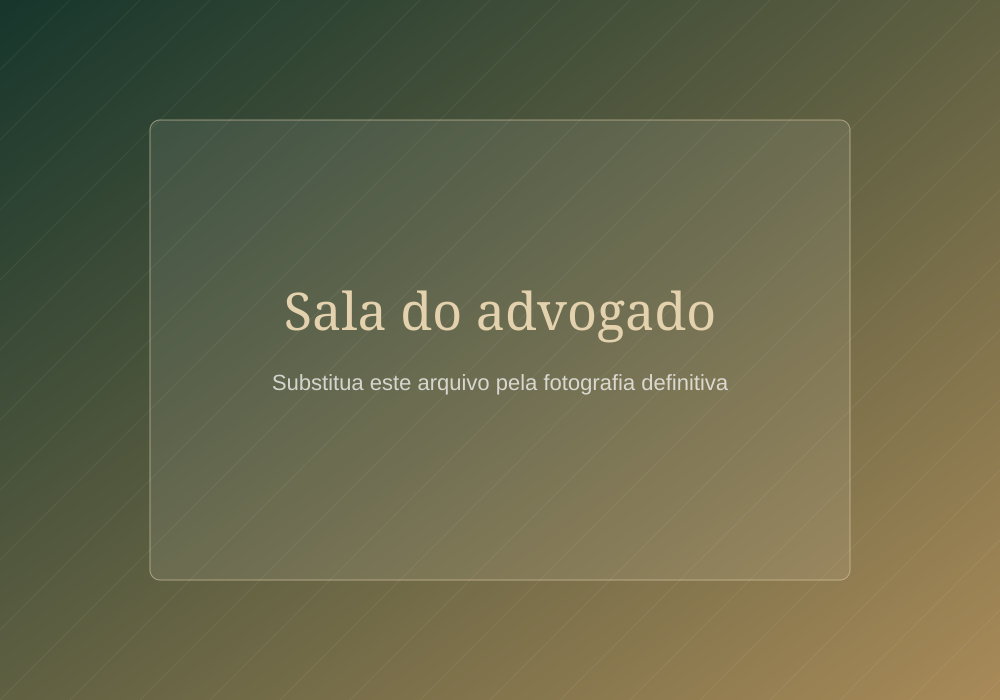
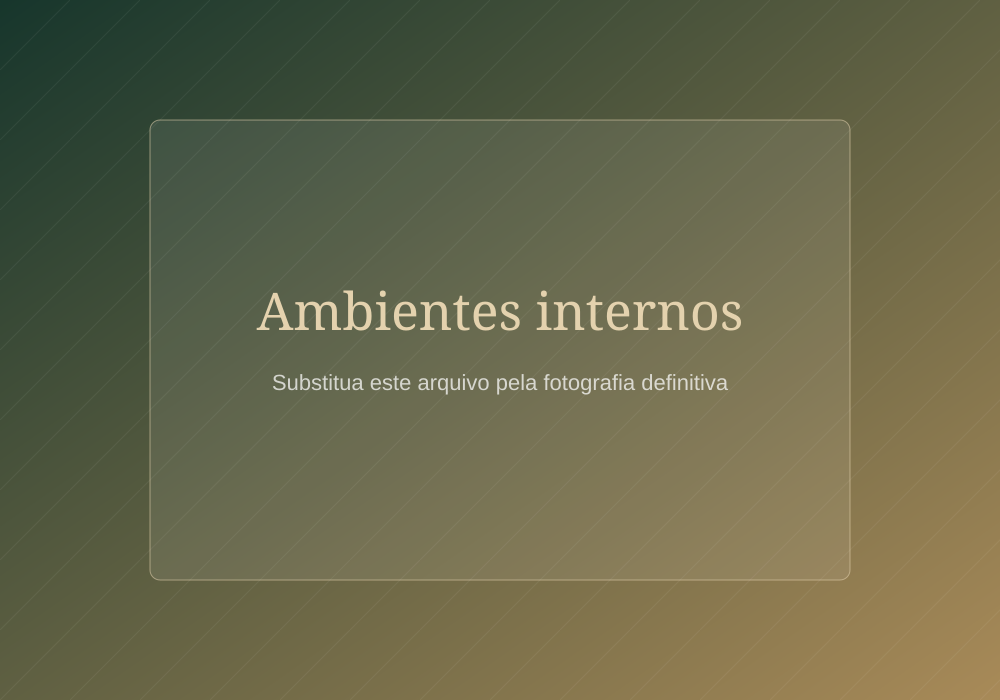

Direito Civil
Orientação e atuação em relações contratuais, patrimoniais e de responsabilidade civil, com análise cuidadosa de cada caso.
Entrar em contatoAdvocacia no Amapá desde 2018
Experiência jurídica, atendimento humanizado e compromisso com a defesa dos seus direitos.
Atendimento jurídico profissional nas áreas civil, trabalhista e tributária para clientes de todo o Amapá e seus municípios.
O escritório
Fundado em 2018, o César Martins Advogados Associados nasceu do propósito de oferecer atendimento jurídico profissional, próximo e transparente às pessoas e empresas do Amapá.
Nosso trabalho é construído sobre o cuidado com cada história. Ouvimos com atenção, explicamos com clareza e conduzimos cada demanda com responsabilidade técnica, dentro do que a legislação permite.
Contamos com equipe especializada nas áreas civil, trabalhista e tributária e com uma estrutura moderna, preparada para receber clientes em um ambiente reservado e confortável.
Atuação
Atendimento jurídico consultivo e contencioso, com análise individual de cada caso.
Orientação e atuação em relações contratuais, patrimoniais e de responsabilidade civil, com análise cuidadosa de cada caso.
Entrar em contatoAcompanhamento de demandas relacionadas às relações de trabalho, tanto na esfera consultiva quanto contenciosa.
Entrar em contatoAnálise fiscal, planejamento e defesa em questões tributárias, sempre com base na legislação vigente.
Entrar em contatoConteúdo informativo
Temas frequentemente tratados no escritório, apresentados de forma educativa. Cada situação exige análise específica.
Nosso trabalho
Escuta atenta e comunicação clara em cada etapa do atendimento.
Profissionais dedicados às áreas civil, trabalhista e tributária.
Atuação jurídica contínua desde 2018.
Ambiente preparado para atendimentos reservados e confortáveis.
Organização interna voltada ao acompanhamento diligente das demandas.

Advogado principal
Espaço reservado para a biografia institucional do advogado principal, descrevendo trajetória, formação e atuação profissional.
Agendar atendimentoProfissionais
Profissionais dedicados ao acompanhamento técnico e próximo de cada demanda.
OAB/AP 000.000
Área de atuaçãoOAB/AP 000.000
Área de atuaçãoOAB/AP 000.000
Área de atuaçãoOAB/AP 000.000
Área de atuaçãoAmbientes
Espaços preparados para atendimentos reservados, confortáveis e discretos.



Institucional
Um ambiente preparado para oferecer atendimento profissional, confortável e reservado.
Espaço reservado para o vídeo institucional
Dúvidas
O agendamento pode ser solicitado por WhatsApp, telefone ou e-mail. Nossa equipe retornará para combinar data, horário e formato do atendimento.
Os documentos dependem do tipo de demanda. Leve um documento de identificação e todos os registros relacionados ao caso. A equipe informará antecipadamente se houver necessidade de documentos específicos.
O prazo varia conforme a natureza da demanda, a complexidade do caso e o andamento do órgão responsável. Uma expectativa mais adequada pode ser apresentada após a análise inicial.
Instituições
Espaço reservado às logomarcas dos sindicatos e instituições parceiras.
Área do Cliente
Fale conosco
Entre em contato para tirar dúvidas ou agendar um atendimento.
Falar pelo WhatsAppAv. Coaraci Nunes, nº 750, Centro, Macapá, AP
Horário de atendimento a definir